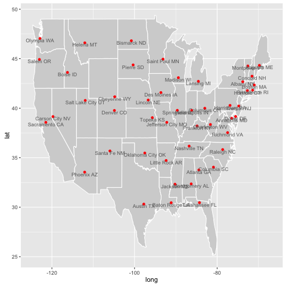

R
Table of Contents
1 Buffer
http://www.public.iastate.edu/~hofmann/stat579/
read.csv(file, header = TRUE, sep = ",", quote = "\"", dec = ".", fill = TRUE, comment.char = "", ...)
Example:
a<-read.csv("filename.csv"); # this will be a matrix, each column with a named header x <- a$name1 # access by header name, this will be a vector
1.1 jitter(x)
jitter(x, factor = 1, amount = NULL)
Add a small amount of noise to a numeric vector.
1.2 plot(x, y, …)
Possible ... arguments:
- 'type' what type of plot:
- "p" for points,
- "l" for lines,
- "b" for both,
- "h" for 'histogram' like (or 'high-density') vertical lines,
- 'main' an overall title for the plot: see 'title'.
- 'xlab' a title for the x axis: see 'title'.
- 'ylab' a title for the y axis: see 'title'.
1.3 str(obj)
Compactly Display the Structure of an Arbitrary R Object
1.4 class(obj)
Get or set an object's class.
This can serve as a debugging method, to see the class of a data object.
It can also be used to declare an object: class(x) <- value
1.5 TODO s
as.data.frame
1.6 graphics (built-in)
barplot: TODO Creates a bar plot with vertical or horizontal bars.
1.7 plyr
1.7.1 TODO count
count(df, vars = NULL, wt_var = NULL)
2 Installation
2.1 Install package
Install this directly in R commandline.
install.packages(c("dplyr"))
3 Usage
3.1 Include a library
library(class)
3.2 Path & Execute R scripts
setwd("/absolute/path") # the following can be the relative path to the above path source("./xxx.R") # load a script
3.3 Command line interface
Be sure to enter a new work directory because R may store something in current directory.
3.3.1 Getting help information
R
> q()
> help(lm)
> help("if")
> ?lm
> example(topic)
> ??solve
3.3.2 Function command:
> source("a.R") # load another file > sink("a.lis") # redirect output to a.lis > sink() # retore output to stdio > ls() # list the objects currently stored > objects() # create and store current objects > rm(x, y, z, ink, junk, temp, foo, bar) # remove objects
3.4 Emacs ESS
3.4.1 with org mode
In org mode, there's a babel for R, so just C-c C-c would work.
It is possible to run each single line,
use C-c <quote> to edit code, then C-RET to evaluate.
To start ESS session, run command S.
Or create a R file, and C-c C-c to evaluate.
This will prompt to create a session.
ESS will create a command interface as a buffer.
Execute ?foo will open the R-doc for the function foo.
3.5 With Org-mode
Org file header:
#+OPTIONS: toc:nil
#+LATEX_CLASS: article
# #+LATEX_CLASS_OPTIONS: [a4paper, margin=0in, 11pt]
#+LATEX_HEADER: \usepackage{geometry}
#+LATEX_HEADER: \geometry{margin=1in}
#+LATEX_HEADER: \usepackage{indentfirst}
#+LATEX_HEADER: \usepackage{fancyhdr}
#+LATEX_HEADER: \pagestyle{fancy}
#+LATEX_HEADER: \fancyhf{}
#+LATEX_HEADER: \rhead{573 HW3}
#+LATEX_HEADER: \lhead{Hebi Li}
#+PROPERTY: session *R*
To make the code listing looks better, add this before the first code listing. This will apply to all listing, as well as the output of R code whose format is "org".
#+ATTR_LATEX: :options frame=shadowbox
To export a graph:
:file hw3-1.png :results output graphics :exports both
To export ordinary result:
:exports both
To export some summary data:
:exports both :results output org
4 Concepts & Language Reference
4.1 Numbers
R will use double precision real numbers, or double precision complex numbers.
Always supply complex numbers explicitly:
sqrt(-17) will give NaN and a warning,
but sqrt(-17+0i) will do it.
4.2 Logical
TRUE, FALSE, NA
!aa & ba | bis.na(x). never use x==NA, that will output a vector of lengh(x) with all NA
4.3 String
paste() function takes an arbitrary number of arguments
and concatenates them one by one into character strings.
Any numbers given among the arguments are coerced
into character strings in the evident way,
that is, in the same way they would be if they were printed.
The recycling rule also takes place here.
> labs <- paste(c("X","Y"), 1:10, sep="") # c("X1", "Y2", "X3", "Y4", "X5", "Y6", "X7", "Y8", "X9", "Y10")
4.4 Objects
Two intrinsic attributes: mode and length.
Have two system functions:
mode(object) and length(object).
- mode: the basic type of its fundamental constituents
4.5 Vectors
4.5.1 Declaration
There are multiple ways to declare a vector:
4.5.1.1 c operator
all these assignments are equivalent
# c() can take an arbitrary number of vector arguments. # return a vector got by concatenating its arguments end to end > x <- c(10.4, 5.6, 3.1, 6.4, 21.7) > x = c(10.4, 5.6, 3.1, 6.4, 21.7) > x # display x > assign("x", c(10.4, 5.6, 3.1, 6.4, 21.7)) > c(10.4, 5.6, 3.1, 6.4, 21.7) -> x
4.5.1.2 Colon operator
1:30: the same as: c(1, 2, ..., 29, 30)
Colon operator can also specify a backward sequence: 30:1
Colon operater has higher priority: 2*1:15 is the same as c(2, 4, …, 28, 30)
4.5.1.3 Seq
seq(2,10) produces 2:10
seq(from=1, to=30) is the same as seq(to=30, from=1)
> seq(-5, 5, by=.2) -> s3 > s4 <- seq(length=51, from=-5, by=.2) # x = [1,2,3] > s5 <- rep(x, times=5) # put five copies of x end-to-end in s5 # [1,2,3,1,2,3,...] > s6 <- rep(x, each=5) # repeats each element of x five times before moving on to the next. # [1,1,1,1,1,2,2,2,2,2,...]
4.5.1.4 Matrix
> dim(z) <- c(3,5,100) # 3 by 5 by 100 array > z[2,,] # is 5,100 array > z[,,] # is the entire array
4.5.2 Operations
Operation on vector will work on each item of the vector, producing a vector. Operation among multiple vectors does not require the vectors to be of same length. The result is the longest, small ones repeat.
> 1/x # will use 1 divides all 5 values of x, just like matrix in matlab > y <- c(x, 0, x) > v <- 2*x + y + 1 # small one repeat
4.5.2.1 outer product
> ab <- a %o% b # the same as > ab <- outer(a, b, "*")
we can change the function used in outer
> f <- function(x, y) cos(y)/(1 + x^2) > z <- outer(x, y, f)
4.5.2.2 matrix multiplication
> A * B # matrix of element by element products > A %*% B # matrix product > x %*% A %*% x # quadratic form ... 二次多项式 ax^2 + bxy + cy^2
4.5.2.3 solve linear equation
> b <- A %*% x # if b and A are given, but not x, x will contain the result > solve(A,b) # will also solve the system. # I'm not sure this should be execute after the previous statement.
4.5.3 Vector Indexing/Subseting/Slicing
4.5.3.1 Single Dimension
> y <- x[!is.na(x)] # x's none-NA elements. > (x+1)[(!is.na(x)) & x>0] -> z > x[6] # 6th element > x[1:10] # first 10 elements > c("x","y")[rep(c(1,2,2,1), times=4)] # a character vector of length 16 consisting of "x", "y", "y", "x" repeated four times. > y <- x[-(1:5)] # all but the first five elements of x.
naming
> fruit <- c(5, 10, 1, 20) > names(fruit) <- c("orange", "banana", "apple", "peach") > lunch <- fruit[c("apple","orange")]
change the subset:
> x[is.na(x)] <- 0 # replaces any missing values in x by zeros > y[y < 0] <- -y[y < 0] # is same as: > y <- abs(y)
4.5.3.2 indexing matrix
> x <- array(1:20, dim=c(4,5)) # Generate a 4 by 5 array. > x [,1] [,2] [,3] [,4] [,5] [1,] 1 5 9 13 17 [2,] 2 6 10 14 18 [3,] 3 7 11 15 19 [4,] 4 8 12 16 20 > i <- array(c(1:3,3:1), dim=c(3,2)) > i # i is a 3 by 2 index array. [,1] [,2] [1,] 1 3 [2,] 2 2 [3,] 3 1 > x[i] # Extract those elements [1] 9 6 3 > x[i] <- 0 # Replace those elements by zeros. > x [,1] [,2] [,3] [,4] [,5] [1,] 1 5 0 13 17 [2,] 2 0 10 14 18 [3,] 0 7 11 15 19 [4,] 4 8 12 16 20
4.6 functions
4.6.1 Basic Mathematics
+,-,*,/,^(power),log,exp,sin,cos,tan,sqrtmin,maxpmaxandpmin: parallel maximum and minimum functions a vector (of length equal to their longest argument) that contains in each element the largest (smallest) element in that position in any of the input vectors
4.6.2 common functions
range: same asc(min(x),max(x))length(x),sum(x),prod(x)(product)mean(x):sum(x)/length(x)var(x):sum((x-mean(x))^2)/(length(x)-1)sort(x): increasing orderorder()orsort.list()
5 Packages
5.1 ggplot2
qplot(totbill, tip, geom="point", data=tips) # scatter plot qplot(totbill, tip, geom="point", data=tips) + geom_smooth(method="lm") # with linear relationship line qplot(tip, geom="histogram", data=tip) # histogram qplot(tip, geom="histogram", binwidth=1, data=tips) # with custom binwidth # box plots qplot(sex, tipperc, geom="boxplot", data=tips) qplot(smoker, tipperc, geom="boxplot", data=tips) qplot(sex:smoker, tipperc, geom="boxplot", data=tips) # combine! plot the two sets of graph in two one graph qplot(totbill, tip, geom="point", colour=day, data=tips) # scatter plot with colors, in regard to "day" column
5.2 dplyr: A Grammar of Data Manipulation
6 Some R Scripts I wrote
6.1 Plot the US map
# load library and prepare data library(ggplot2) library(maps) states <- map_data("state") # plot map map <- qplot(long, lat, geom="polygon", fill=I("lightgrey"), colour=I("white"), group=group, data=states) # inspecting map map # with different themes map + theme_classic() maptheme <- map + theme_classic() + xlab("") + ylab("") + # no x or y labels theme(axis.line=element_blank()) # inspecting this theme maptheme ## load city data data(us.cities) head(us.cities) # plot city data onto the same map, by "add" operation with "goem_point" maptheme + geom_point(aes(x=long, y=lat, group=1), data=us.cities) # the cities are in red maptheme + geom_point(aes(x=long, y=lat, group=1), data=us.cities, color="red") ## http://www.public.iastate.edu/~hofmann/stat579/lectures/15-polishing.html ## 1. plot only capitals (capital != 0) ## 2. do not plot cities outside US (xlim, ylim) ## 3. label the city names (geom_text) ## 4. adjust the position of city names so that it does not overlap the point (hjust, vjust in geom_text) ## 5. Make the text grey and smaller us.capital = subset(us.cities, capital != 0) head(us.capital) map <- qplot( long, lat, geom="polygon", fill=I("lightgrey"), colour=I("white"), group=group, data=states, xlim=c(min(states$long), max(states$long)), ylim=c(min(states$lat), max(states$lat))) map + geom_point(aes(x=long, y=lat, group=1), data=us.capital, color="red") + geom_text( aes(x=long, y=lat, group=1), data=us.capital, label=us.capital$name, hjust=0.5, vjust=1, color="dimgrey", size=3)
